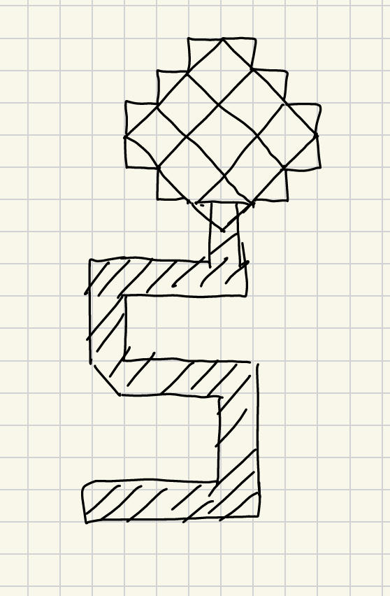

Name: Sherry Shi
UCSC Email: Yshi162@ucsc.edu
Awesome: Undo removes the last painted shape without clearing the whole canvas.
This is my draw picture.
The stem is shaped like the letter S (my initial).
